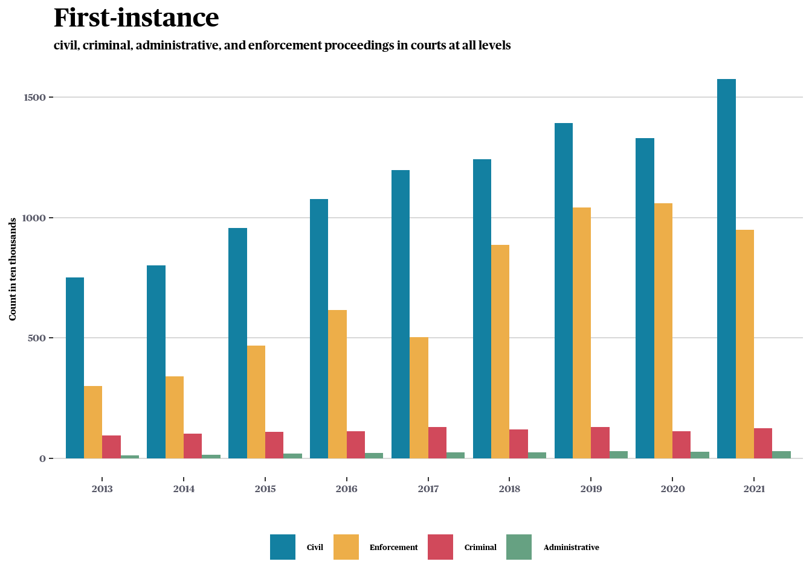
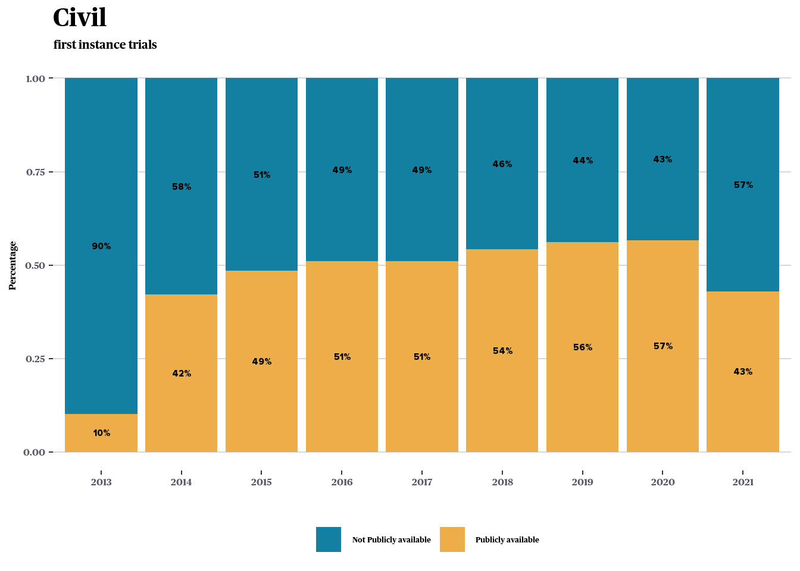
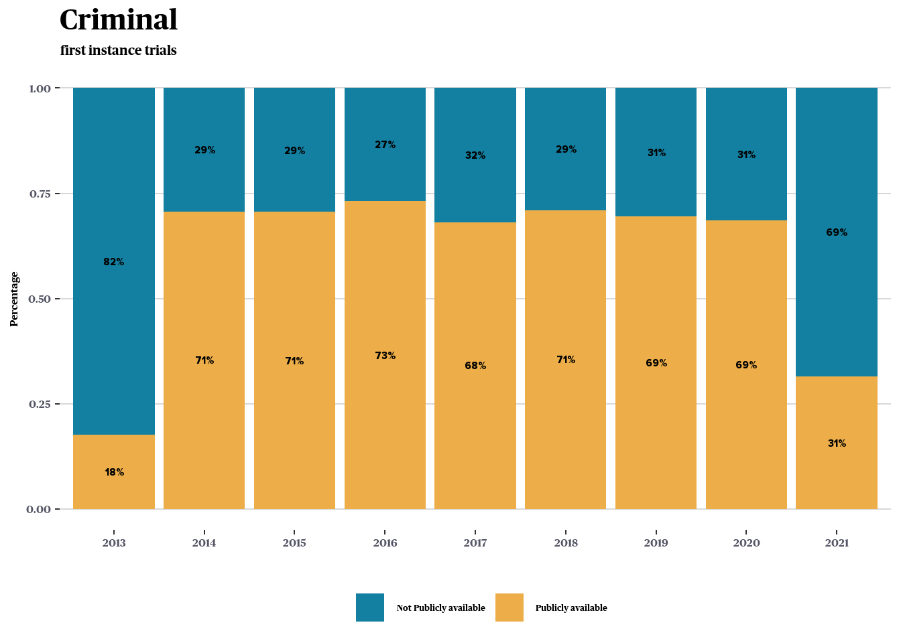
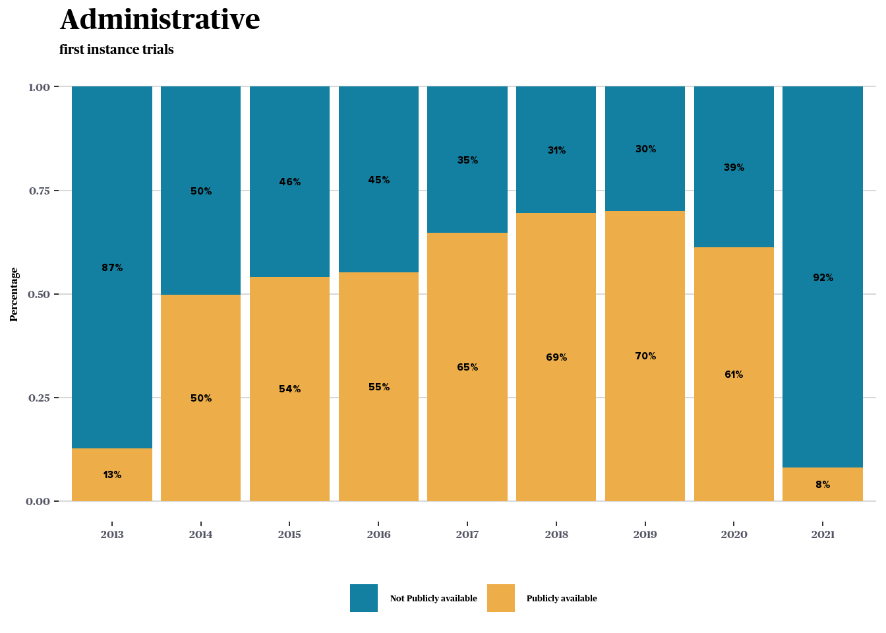
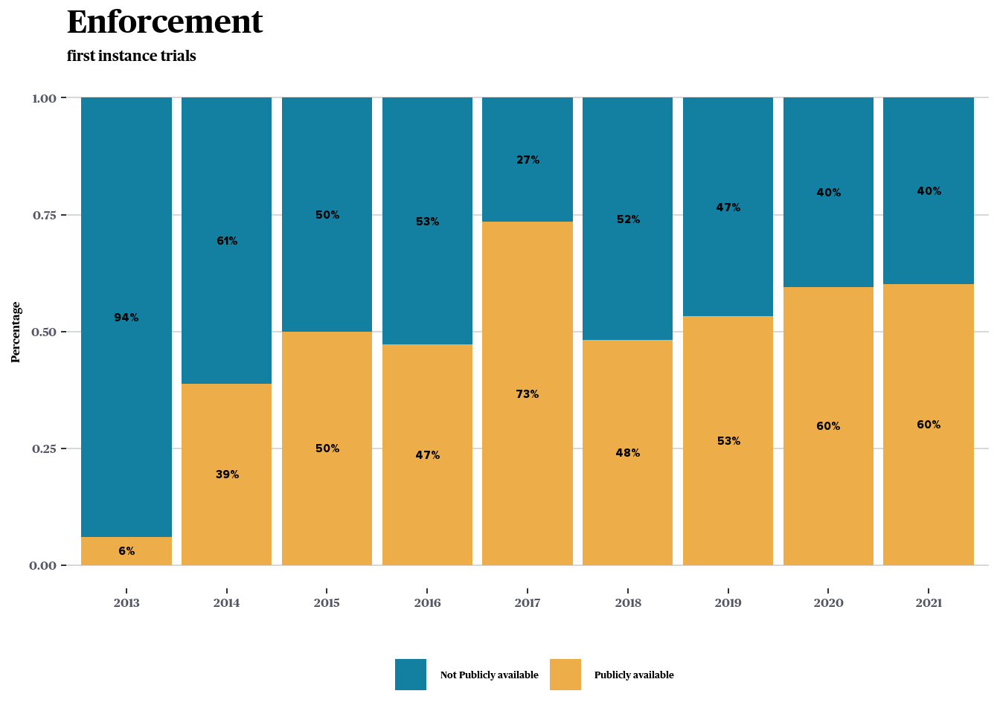

Chinese court judgement data
Web Scraping
Court Rulings
Publication rate and deletion rate
Xinzhuo Huang ![]()
Overview
The author  has colleted tens of millions of court judgments by province and by law from 2014 to 2023 with web scraping. For more technical details about the web scraper, please refer to my blog.
has colleted tens of millions of court judgments by province and by law from 2014 to 2023 with web scraping. For more technical details about the web scraper, please refer to my blog.
By comparing the data in the annual work report presented by the Supreme People’s court (最高人民法院) to the National People’s Congress (全国人大) each year with the data made public on the China Judgements Online, I estimate the publication rate of legal documents in China. Moreover, based on my own database, I also estimate how many previously published legal documents have been deleted by China Judgement Online.
Sample Data
What does our cleaned data look like?
Publication Rate
Through the annual reprots of the the Supreme People’s court (最高人民法院), we estimate the total number of jugdgements issued by courts across China from 2013 to 2021.
The chart below demonstrates the quantity of court documents generated annually from first instance trials (一审).

By comparing the data in the annual work report presented by the Supreme People’s court each year with the data made public on the China Judgements Online, I estimate the publication rate of court documents.




Deletion Rate
No matching items
Citation
BibTeX citation:
@online{xinzhuo2023,
author = {Xinzhuo, Huang},
title = {Chinese Court Judgement Data},
date = {2023-10-27},
url = {https://xinzhuo.work/data/judgment},
langid = {en}
}
For attribution, please cite this work as:
Xinzhuo, Huang. 2023. “Chinese Court Judgement Data.”
October 27, 2023. https://xinzhuo.work/data/judgment.